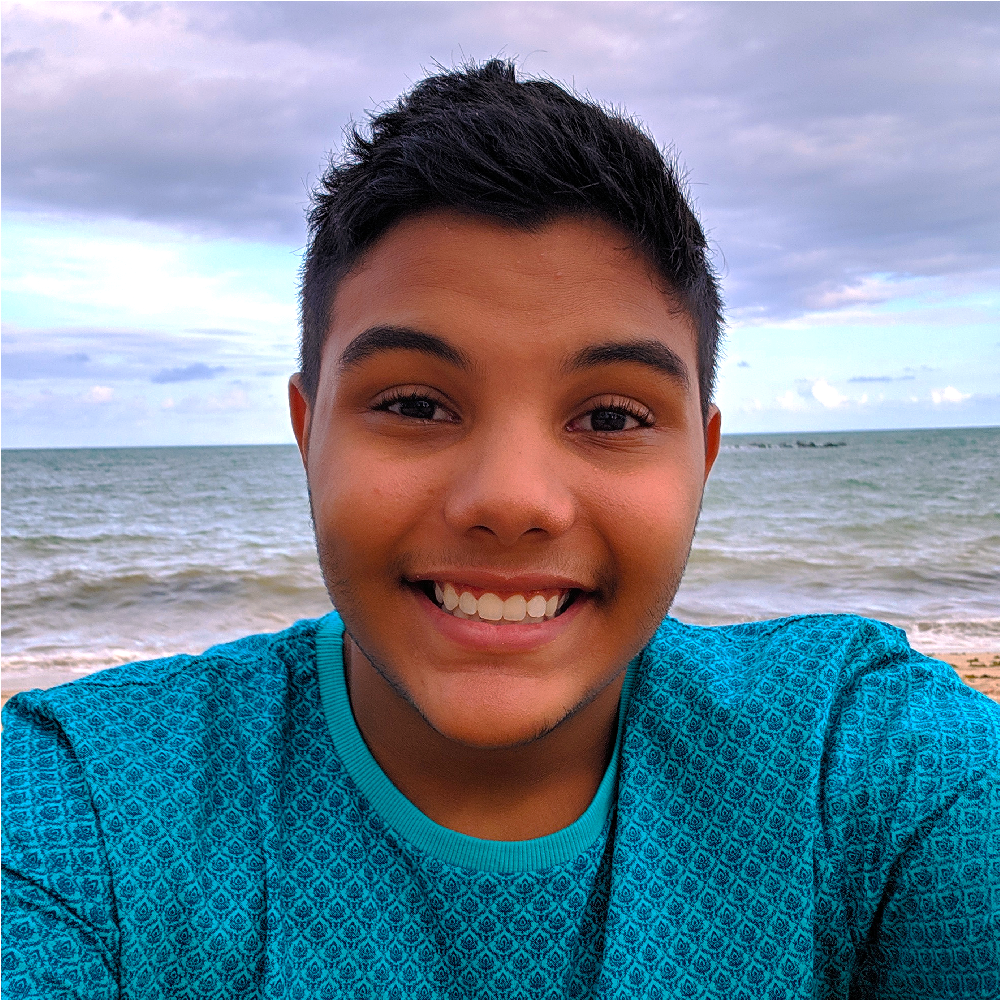

SCAN - Samuel Celso dos Anjos Neto
Sobre mim
Jogos
Contato
Sobre mim

Recifense! Resido em Jaboatão do Guararpes, Piedade, tenho 18 anos (Abril de 2022), sou estudante de Ciência da Computação da Universidade Federal De Pernambuco
Gosto muito de musicas do estilo EDM, POP EDM, e suas variações e Tropical House e suas variações, uma prova disso é a minha playlist do spotify que atualmente conta com mais de 3.700 musicas
Nas horas vagas ou estou maratonando um série ou estou jogando VALORANT, City Skylines ou Braw Stars com meus amigos no Discord
Jogos
Estudei na Escola tecnica estadual Cicero Dias no curso de Programação de Jogos Digitais e fiz alguns projetos tanto antes quanto durante esse periodo, são eles:
- 2016 - Car Explore (Meu primeiro jogo publicado)
- 2018 - Deuses Incas (meu primeiro jogo de cartas)
- 2018 - Eggy (Meu jogo que foi submetido para competição (SBGames))
- 2019 - Lembre-se (Jogo que foi levado pela OI para a GAME XP no Rio De Janeiro)